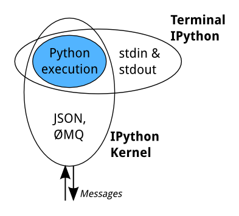
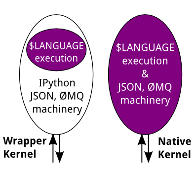
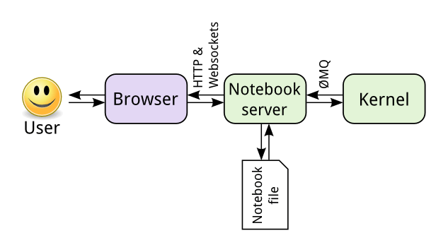
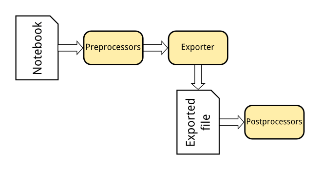
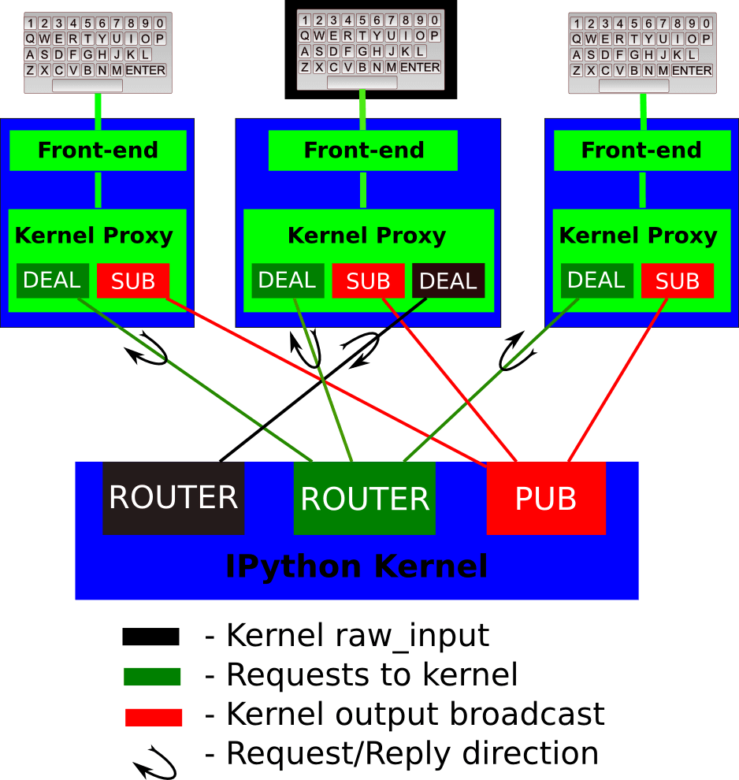

IPython 学习
2015-03-10
1. 写在前面
最近一直在学习spark，延伸到学习IPython，发现IPython这东西还真是不一般啊，所以决定还是应该坐下了认真学习一下。下面都是我在官网上学习时的笔记了。
2. 前言
IPython provides a rich architecture for interactive computing with:
- Powerful interactive shells (terminal and Qt-based).
- A browser-based notebook with support for code, text, mathematical expressions, inline plots and other rich media.
- Support for interactive data visualization and use of GUI toolkits.
- Flexible, embeddable interpreters to load into your own projects.
- Easy to use, high performance tools for parallel computing.
IPython 3.x will be the last monolithic release of IPython, containing the notebook server, qtconsole, etc. The language-agnostic parts of the project: the notebook format, message protocol, qtconsole, notebook web application, etc. will move to new projects under the name Jupyter. IPython itself will return to being focused on interactive Python, part of which will be providing a Python kernel for Jupyter.
3. 介绍
The goal of IPython is to create a comprehensive environment for interactive and exploratory computing. To support this goal, IPython has three main components:
- An enhanced interactive Python shell.
- A decoupled two-process communication model, which allows for multiple clients to connect to a computation kernel, most notably the web-based notebook
- An architecture for interactive parallel computing.
3.1 Enhanced interactive Python shell
看官网。link
3.2 Decoupled two-process model
IPython has abstracted and extended the notion of a traditional Read-Evaluate-Print Loop (REPL) environment by decoupling the evaluation into its own process. We call this process a kernel: it receives execution instructions from clients and communicates the results back to them.
This decoupling allows us to have several clients connected to the same kernel, and even allows clients and kernels to live on different machines. With the exclusion of the traditional single process terminal-based IPython (what you start if you run ipython without any subcommands), all other IPython machinery uses this two-process model. This includes ipython console, ipython qtconsole, and ipython notebook.
As an example, this means that when you start ipython qtconsole, you’re really starting two processes, a kernel and a Qt-based client can send commands to and receive results from that kernel. If there is already a kernel running that you want to connect to, you can pass the –existing flag which will skip initiating a new kernel and connect to the most recent kernel, instead. To connect to a specific kernel once you have several kernels running, use the %connect_info magic to get the unique connection file, which will be something like –existing kernel-19732.json but with different numbers which correspond to the Process ID of the kernel.
You can read more about using ipython qtconsole, and ipython notebook. There is also a message spec which documents the protocol for communication between kernels and clients.
zeppelin也是用了这样的机制的，看来databricks也是这样搞的。关于这个机制，这篇notebook有简单的描述
3.3 Interactive parallel computing
看官网。
4. 安装
还是看官网有用，主要还是要解决依赖的问题，最好的方法就是 pip install “ipython[all]”。
5. Using IPython for interactive work
5.1 Introducing IPython
- 常用的四个帮助方法：
- ? ： Introduction and overview of IPython’s features.
- %quickref ： Quick reference.
- help ： Python’s own help system.
- object? ： Details about ‘object’, use ‘object??’ for extra details.
Typing object_name? will print all sorts of details about any object, including docstrings, function definition lines (for call arguments) and constructor details for classes. To get specific information on an object, you can use the magic commands %pdoc, %pdef, %psource and %pfile
- Configuration
Much of IPython can be tweaked through configuration. To get started, use the command ipython profile create to produce the default config files. These will be placed in ~/.ipython/profile_default, and contain comments explaining what the various options do.
Profiles allow you to use IPython for different tasks, keeping separate config files and history for each one. More details in the profiles section.
- Startup Files
If you want some code to be run at the beginning of every IPython session, the easiest way is to add Python (.py) or IPython (.ipy) scripts to your profile_default/startup/ directory. Files here will be executed as soon as the IPython shell is constructed, before any other code or scripts you have specified. The files will be run in order of their names, so you can control the ordering with prefixes, like 10-myimports.py.
5.2 IPython reference
- Command-line usage
You start IPython with the command:
$ ipython [options] files
If invoked with no options, it executes all the files listed in sequence and drops you into the interpreter while still acknowledging any options you may have set in your ipython_config.py. This behavior is different from standard Python, which when called as python -i will only execute one file and ignore your configuration setup.
Please note that some of the configuration options are not available at the command line, simply because they are not practical here. Look into your configuration files for details on those. There are separate configuration files for each profile, and the files look like ipython_config.py or ipython_config_frontendname.py. Profile directories look like profile_profilename and are typically installed in the IPYTHONDIR directory, which defaults to $HOME/.ipython. For Windows users, HOME resolves to C:\Users\YourUserName in most instances.
- IPython as your default Python environment
Python honors the environment variable PYTHONSTARTUP and will execute at startup the file referenced by this variable. If you put the following code at the end of that file, then IPython will be your working environment anytime you start Python:
import os, IPython
os.environ['PYTHONSTARTUP'] = '' # Prevent running this again
IPython.start_ipython()
raise SystemExit
The raise SystemExit is needed to exit Python when it finishes, otherwise you’ll be back at the normal Python »> prompt.
This is probably useful to developers who manage multiple Python versions and don’t want to have correspondingly multiple IPython versions. Note that in this mode, there is no way to pass IPython any command-line options, as those are trapped first by Python itself.
6. The IPython notebook
6.1 Running a notebook server
The IPython notebook web-application is based on a server-client structure. This server uses a two-process kernel architecture based on ZeroMQ, as well as Tornado for serving HTTP requests. By default, a notebook server runs on http://127.0.0.1:8888/ and is accessible only from localhost. This document describes how you can secure a notebook server and how to run it on a public interface.
7. Using IPython for parallel computing
目前研究的方向和IPython自身的parallel关联不大，暂时不看这块。
8. Configuration and customization
8.1 Serveral config methods
- Config files
- Command line arguments
- The config magics
8.2 IPython options
重点研究notebook options和kernel options，细节用到时再仔细看。
- Terminal IPython options
- IPython kernel options
- IPython notebook options
- IPython Qt console options
8.3 IPython extensions
A level above configuration are IPython extensions, Python modules which modify the behaviour of the shell. They are referred to by an importable module name, and can be placed anywhere you’d normally import from, or in .ipython/extensions/.
Getting extensions A few important extensions are bundled with IPython. Others can be found on the extensions index on the wiki, and the Framework :: IPython tag on PyPI.
Extensions on PyPI can be installed using pip, like any other Python package. Other simple extensions can be installed with the %install_ext magic. The latter does no validation, so be careful using it on untrusted networks like public wifi.
Using extensions To load an extension while IPython is running, use the %load_ext magic:
In [1]: %load_ext myextension
To load it each time IPython starts, list it in your configuration file:
c.InteractiveShellApp.extensions = [
'myextension'
]
Writing extensions An IPython extension is an importable Python module that has a couple of special functions to load and unload it. Here is a template:
# myextension.py
def load_ipython_extension(ipython):
# The `ipython` argument is the currently active `InteractiveShell`
# instance, which can be used in any way. This allows you to register
# new magics or aliases, for example.
def unload_ipython_extension(ipython):
# If you want your extension to be unloadable, put that logic here.This load_ipython_extension() function is called after your extension is imported, and the currently active InteractiveShell instance is passed as the only argument. You can do anything you want with IPython at that point.
load_ipython_extension() will be called again if you load or reload the extension again. It is up to the extension author to add code to manage that.
Useful InteractiveShell methods include register_magic_function(), push() (to add variables to the user namespace) and drop_by_id() (to remove variables on unloading).
My extensions dir: /root/anaconda/lib/python2.7/site-packages/IPython/entensions/
Defining custom magics There are two main ways to define your own magic functions: from standalone functions and by inheriting from a base class provided by IPython: IPython.core.magic.Magics. Below we show code you can place in a file that you load from your configuration, such as any file in the startup subdirectory of your default IPython profile.
First, let us see the simplest case. The following shows how to create a line magic, a cell one and one that works in both modes, using just plain functions:
from IPython.core.magic import (register_line_magic, register_cell_magic,
register_line_cell_magic)
@register_line_magic
def lmagic(line):
"my line magic"
return line
@register_cell_magic
def cmagic(line, cell):
"my cell magic"
return line, cell
@register_line_cell_magic
def lcmagic(line, cell=None):
"Magic that works both as %lcmagic and as %%lcmagic"
if cell is None:
print("Called as line magic")
return line
else:
print("Called as cell magic")
return line, cell
# We delete these to avoid name conflicts for automagic to work
del lmagic, lcmagicYou can also create magics of all three kinds by inheriting from the IPython.core.magic.Magics class. This lets you create magics that can potentially hold state in between calls, and that have full access to the main IPython object:
# This code can be put in any Python module, it does not require IPython
# itself to be running already. It only creates the magics subclass but
# doesn't instantiate it yet.
from __future__ import print_function
from IPython.core.magic import (Magics, magics_class, line_magic,
cell_magic, line_cell_magic)
# The class MUST call this class decorator at creation time
@magics_class
class MyMagics(Magics):
@line_magic
def lmagic(self, line):
"my line magic"
print("Full access to the main IPython object:", self.shell)
print("Variables in the user namespace:", list(self.shell.user_ns.keys()))
return line
@cell_magic
def cmagic(self, line, cell):
"my cell magic"
return line, cell
@line_cell_magic
def lcmagic(self, line, cell=None):
"Magic that works both as %lcmagic and as %%lcmagic"
if cell is None:
print("Called as line magic")
return line
else:
print("Called as cell magic")
return line, cell
# In order to actually use these magics, you must register them with a
# running IPython. This code must be placed in a file that is loaded once
# IPython is up and running:
ip = get_ipython()
# You can register the class itself without instantiating it. IPython will
# call the default constructor on it.
ip.register_magics(MyMagics)If you want to create a class with a different constructor that holds additional state, then you should always call the parent constructor and instantiate the class yourself before registration:
@magics_class
class StatefulMagics(Magics):
"Magics that hold additional state"
def __init__(self, shell, data):
# You must call the parent constructor
super(StatefulMagics, self).__init__(shell)
self.data = data
# etc...
# This class must then be registered with a manually created instance,
# since its constructor has different arguments from the default:
ip = get_ipython()
magics = StatefulMagics(ip, some_data)
ip.register_magics(magics)In earlier versions, IPython had an API for the creation of line magics (cell magics did not exist at the time) that required you to create functions with a method-looking signature and to manually pass both the function and the name. While this API is no longer recommended, it remains indefinitely supported for backwards compatibility purposes. With the old API, you’d create a magic as follows:
def func(self, line):
print("Line magic called with line:", line)
print("IPython object:", self.shell)
ip = get_ipython()
# Declare this function as the magic %mycommand
ip.define_magic('mycommand', func)9. IPython developer’s guide
This are two categories of developer focused documentation:
- Documentation for developers of IPython itself.
- Documentation for developers of third party tools and libraries that use IPython.
This part of our documentation only contains information in the second category.
Developers interested in working on IPython itself should consult our developer information on the IPython GitHub wiki.
10 How IPython works
10.1 Terminal IPython
When you type ipython, you get the original IPython interface, running in the terminal. It does something like this:
while True:
code = input(">>> ")
exec(code)
Of course, it’s much more complex, because it has to deal with multi-line code, tab completion using readline, magic commands, and so on. But the model is like that: prompt the user for some code, and when they’ve entered it, exec it in the same process. This model is often called a REPL, or Read-Eval-Print-Loop.
10.2 The IPython Kernel
All the other interfaces—the Notebook, the Qt console, ipython console in the terminal, and third party interfaces—use the IPython Kernel. This is a separate process which is responsible for running user code, and things like computing possible completions. Frontends communicate with it using JSON messages sent over ZeroMQ sockets; the protocol they use is described in Messaging in IPython.
The core execution machinery for the kernel is shared with terminal IPython:

A kernel process can be connected to more than one frontend simultaneously. In this case, the different frontends will have access to the same variables.
This design was intended to allow easy development of different frontends based on the same kernel, but it also made it possible to support new languages in the same frontends, by developing kernels in those languages, and we are refining IPython to make that more practical.
Today, there are two ways to develop a kernel for another language. Wrapper kernels reuse the communications machinery from IPython, and implement only the core execution part. Native kernels implement execution and communications in the target language:

Wrapper kernels are easier to write quickly for languages that have good Python wrappers, like octave_kernel, or languages where it’s impractical to implement the communications machinery, like bash_kernel. Native kernels are likely to be better maintained by the community using them, like IJulia or IHaskell.
10.3 Notebook
The Notebook frontend does something extra. In addition to running your code, it stores code and output, together with markdown notes, in an editable document called a notebook. When you save it, this is sent from your browser to the notebook server, which saves it on disk as a JSON file with a .ipynb extension.

The notebook server, not the kernel, is responsible for saving and loading notebooks, so you can edit notebooks even if you don’t have the kernel for that language—you just won’t be able to run code. The kernel doesn’t know anything about the notebook document: it just gets sent cells of code to execute when the user runs them.
The Nbconvert tool in IPython converts notebook files to other formats, such as HTML, LaTeX, or reStructuredText. This conversion goes through a series of steps:

- Preprocessors modify the notebook in memory. E.g. ExecutePreprocessor runs the code in the notebook and updates the output.
- An exporter converts the notebook to another file format. Most of the exporters use templates for this.
- Postprocessors work on the file produced by exporting.
The nbviewer website uses nbconvert with the HTML exporter. When you give it a URL, it fetches the notebook from that URL, converts it to HTML, and serves that HTML to you.
11. Messaging in IPython
The IPython message specification is versioned independently of IPython. The current version of the specification is 5.0.
11.1 Introduction
This document explains the basic communications design and messaging specification for how the various IPython objects interact over a network transport. The current implementation uses the ZeroMQ library for messaging within and between hosts.
The basic design is explained in the following diagram:

A single kernel can be simultaneously connected to one or more frontends. The kernel has three sockets that serve the following functions:
-
Shell: this single ROUTER socket allows multiple incoming connections from frontends, and this is the socket where requests for code execution, object information, prompts, etc. are made to the kernel by any frontend. The communication on this socket is a sequence of request/reply actions from each frontend and the kernel.
-
IOPub: this socket is the ‘broadcast channel’ where the kernel publishes all side effects (stdout, stderr, etc.) as well as the requests coming from any client over the shell socket and its own requests on the stdin socket. There are a number of actions in Python which generate side effects: print() writes to sys.stdout, errors generate tracebacks, etc. Additionally, in a multi-client scenario, we want all frontends to be able to know what each other has sent to the kernel (this can be useful in collaborative scenarios, for example). This socket allows both side effects and the information about communications taking place with one client over the shell channel to be made available to all clients in a uniform manner.
-
stdin: this ROUTER socket is connected to all frontends, and it allows the kernel to request input from the active frontend when raw_input() is called. The frontend that executed the code has a DEALER socket that acts as a ‘virtual keyboard’ for the kernel while this communication is happening (illustrated in the figure by the black outline around the central keyboard). In practice, frontends may display such kernel requests using a special input widget or otherwise indicating that the user is to type input for the kernel instead of normal commands in the frontend.
All messages are tagged with enough information (details below) for clients to know which messages come from their own interaction with the kernel and which ones are from other clients, so they can display each type appropriately. -
Control: This channel is identical to Shell, but operates on a separate socket, to allow important messages to avoid queueing behind execution requests (e.g. shutdown or abort).
The actual format of the messages allowed on each of these channels is specified below. Messages are dicts of dicts with string keys and values that are reasonably representable in JSON. Our current implementation uses JSON explicitly as its message format, but this shouldn’t be considered a permanent feature. As we’ve discovered that JSON has non-trivial performance issues due to excessive copying, we may in the future move to a pure pickle-based raw message format. However, it should be possible to easily convert from the raw objects to JSON, since we may have non-python clients (e.g. a web frontend). As long as it’s easy to make a JSON version of the objects that is a faithful representation of all the data, we can communicate with such clients.
11.2 General Message Format
A message is defined by the following four-dictionary structure:
{
# The message header contains a pair of unique identifiers for the
# originating session and the actual message id, in addition to the
# username for the process that generated the message. This is useful in
# collaborative settings where multiple users may be interacting with the
# same kernel simultaneously, so that frontends can label the various
# messages in a meaningful way.
'header' : {
'msg_id' : uuid,
'username' : str,
'session' : uuid,
# All recognized message type strings are listed below.
'msg_type' : str,
# the message protocol version
'version' : '5.0',
},
# In a chain of messages, the header from the parent is copied so that
# clients can track where messages come from.
'parent_header' : dict,
# Any metadata associated with the message.
'metadata' : dict,
# The actual content of the message must be a dict, whose structure
# depends on the message type.
'content' : dict,
}12. Making kernels for IPython
A ‘kernel’ is a program that runs and introspects the user’s code. IPython includes a kernel for Python code, and people have written kernels for several other languages.
When IPython starts a kernel, it passes it a connection file. This specifies how to set up communications with the frontend.
There are two options for writing a kernel:
- You can reuse the IPython kernel machinery to handle the communications, and just describe how to execute your code. This is much simpler if the target language can be driven from Python. See Making simple Python wrapper kernels for details.
- You can implement the kernel machinery in your target language. This is more work initially, but the people using your kernel might be more likely to contribute to it if it’s in the language they know.
学习资源
扫一扫